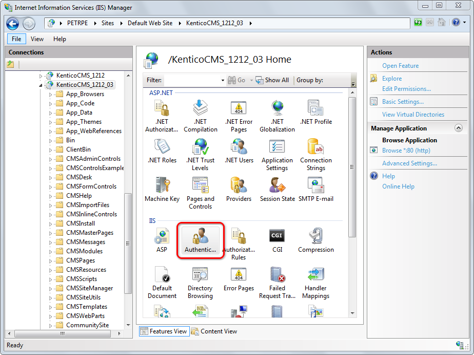
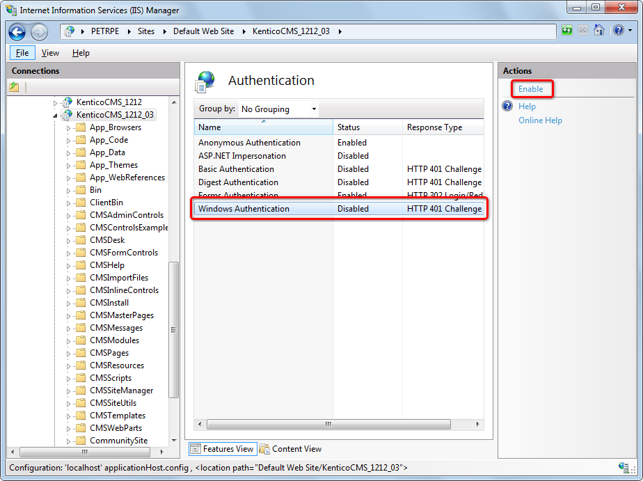

Configuring Windows AD authentication
Kentico supports Windows integrated authentication. This means that when a user signs in to a Windows domain, Kentico automatically recognizes their identity without requiring a user name and password.
Prerequisite
For Windows authentication to work, the application must be able to access the following attributes of user objects in Active Directory (i.e. the attributes cannot be protected or confidential):
memberof
userAccountControl
When an authenticated user comes to a site configured for Windows authentication, the system automatically creates a matching user account in the Kentico database.
Additionally, the system imports the user's domain groups as roles. If an existing user is added to new groups in Active Directory, Kentico imports new roles (the update occurs upon reauthentication, i.e. after the user's session expires). However, existing roles are not removed from users in Kentico when the matching users in Active Directory are removed from groups.
The imported roles do not authorize the users to perform any actions in Kentico by default. You need to configure permissions and UI personalization settings for the imported roles manually if you wish to use them.
Disabling the automatic role import
If you wish to disable the automatic import of user domain groups as roles in Kentico, add the following key to the /configuration/appSettings section of your project's web.config file:
<add key="CMSImportWindowsRoles" value="false" />Configuring Windows authentication
Follow the steps below to switch the application to Windows authentication mode:
Edit the web.config file of the web project.
Set the mode attribute of the <authentication> element in the <system.web> section to Windows:
<authentication mode="Windows">(Optional) You can also make Windows authentication required for access to the live site. To achieve this result, uncomment the following <location> element in your web.config:
<location path=""><system.web><authorization><deny users="?"/></authorization></system.web></location>If you want to require Windows authentication for only a part of the live website, see Securing a website section using Windows authentication.
Save the modified web.config file.
Close all browsers with Kentico, open the website in a new browser and try to access the administration interface (<site domain>/admin).
If you encounter a 401 error, continue to the Enabling Windows authentication in IIS section below.
With this configuration, the system automatically authenticates users from Windows Active Directory and imports them to the Kentico database.
You need to manually set up administrator access for your new AD user account.
Sign out button missing with Windows authentication
When Windows authentication is enabled, the Sign out button in user menu in the top right corner of the administration interface is not displayed. The same applies to the live site, where the sign out link is not displayed in all web parts that can be used to sign out.
Enabling Windows authentication in IIS
If you are experiencing the 401 error with Windows authentication, you need to enable Windows authentication in your IIS:
Start the Internet Information Services (IIS) Manager.
Locate and select your site in the IIS tree.
Double-click the Authentication icon.

Open the Authentication feature in IISWindows Authentication missing in the list
If your IIS installation does not contain Windows Authentication by default, you need to install it:
Go to Control Panel -> Programs and Features -> Turn windows features on or off.
Expand Internet Information Services -> World Wide Web Services.
Under Security, select the Windows Authentication check box.
Click OK to finish the configuration.
Windows Authentication appears as an option in IIS website authentication settings.
Select Windows Authentication.
Click Enable in the Actions menu.

Enable the Windows authentication
IIS now allows Windows authentication on your site.
Setting up administrator access after enabling Windows authentication
When you access the Kentico administration interface (<site domain>/admin) for the first time after configuring Windows authentication, you will encounter an Access denied message. Windows authentication logs you in under a new user account that the system automatically created based on your Active Directory user name, but the account does not have any permissions.
To allow access to all features as an administrator under Windows authentication, you need to manually grant administrator permissions to your new user account:
Access the Kentico administration interface at least once under Windows authentication (to ensure that the system imports your AD user).
Edit the project's web.config file and switch back to Forms authentication (set the mode attribute of the <authentication> element in the <system.web> section back to Forms).
Log back in to the Kentico administration using forms authentication (under your original administrator account).
Open the Users application.
Edit the new user that matches your domain user name (the format is domain-username, for example office-johns).
On the General tab, set the Privilege level to Global administrator.
Click Save and log out.
Edit your web.config file and switch to Windows authentication again.
Close all browsers with Kentico, open the website in a new browser and access the administration interface. Make sure the system recognizes you as a global administrator without the need to manually log in.
Forbidden character replacement during Active Directory import
When importing users and roles, forbidden characters in the names are replaced by the character defined in Settings -> URLs and SEO -> Forbidden characters replacement.
The default value is a dash "-" (domain-username instead of domain\username). If you are using a different character, please change the entered user name accordingly.
You can override this setting by adding the following keys to the AppSettings section of your web.config file. In both cases, the value must be exactly one character:
<add key="CMSForbiddenUserNameCharactersReplacement" value="-" /><add key="CMSForbiddenRoleNameCharactersReplacement" value="-" />If you want to achieve the same functionality as in older versions of Kentico (office\username), forbidden characters replacement can be turned off completely using the following two keys. This may cause problems when using wildcard URLs with user names in the wildcard part and is therefore not recommended.
<add key="CMSEnsureSafeUserNames" value="false" /><add key="CMSEnsureSafeRoleNames" value="false" />